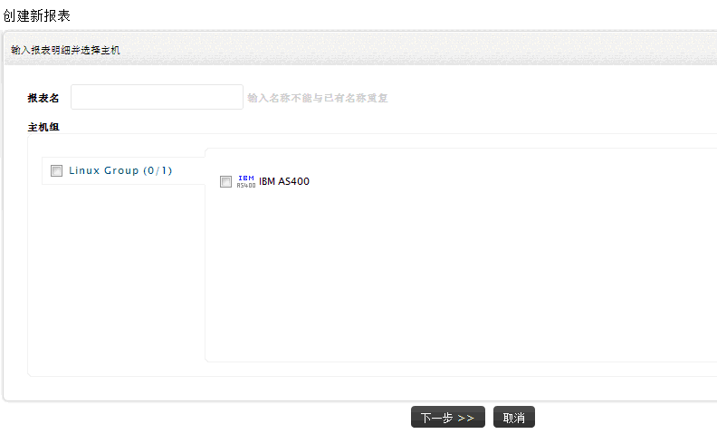
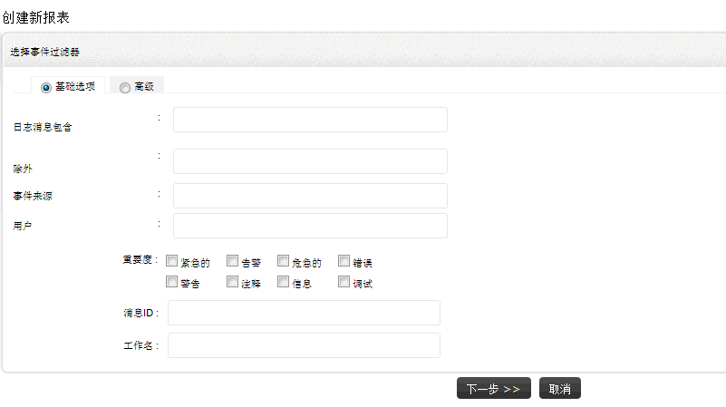

怎样创建IBM iSeries （AS/400）自定义报表
要生成IBM iSeries（AS/400）自定义报表，您需要首先创建一个报表配置文件，并且确保您已至少在EventLog
Analyzer中添加了一台IBM iSeries （AS/400）主机。创建报表，可通过以下菜单实现：
- 报表页签 > 报表： + 新建
- 设置页签 > 报表配置文件 > AS/400
- 标签 +添加 > AS/400 报表
自定义报表配置文件的的创建主要经过三个步骤。
步骤1
在下面的页面中，输入报表的名称，选择报表的类型和主机、主机组。

-
输入报表配置文件的名称
-
选择IBM iSeries（AS/400）主机或主机组来生成报表。
点击 下一步 > > 按钮跳至下个步骤。
步骤2
在下面的页面中，选择事件过滤选项，过滤参数，日志严重度，需要的IBM iSeries消息ID和Job名称。

-
选择基础选项或高级事件过滤选项。在基础过滤选项下，日志消息包含和除外过滤选项仅为基本的匹配条件，在高级过滤选项下，日志消息包含和除外过滤选项可以设置匹配其一或全部匹配选项。
-
输入合适的过滤条件，可用的过滤条件：日志消息包含 –
使用这个可以过滤包含特殊字符或短语的日志，除外 -
使用这个可以将包含有指定字符或短语的日志排除在外，事件来源 -
使用这个可以过滤指定事件来源的日志，以及用户 - 使用这个可以过滤特定用户的日志。
-
按事件严重度过滤日志。
-
输入IBM iSeries 消息ID来过滤日志。
-
输入IBM iSeries Job名称来过滤日志。
点击下一步Next > > 按钮跳至下一个步骤。
步骤3
在下面的页面中，您可以定义报表的生成计划，选择报表的格式以及报表的概要和明细信息，配置通过邮件发送报表。

-
按每小时/每天/每周/每月基准来计划报表的生成，如果您只想在指定的时间生成一次报表，则您可以选择只一次选项。设置报表生成的时间和日期，以及报表数据取自的时间段，
您可以选择前一小时/最后60分钟/前一天/最后24小时/前一周/最后7天/前一个月/最后30天。对于每天和每周报表，您还可以设置报表生成工作时间段或非工作时间段的报表。对于每月报表，只能通过选择复选按钮，生成工作日的报表。工作时间和工作日报表对于获取网络动作的趋势非常有用。
-
选择报表格式，PDF或CSV。
-
选择生成报表的明细信息，概要及明细或概要报表。
-
配置生成的报表发送到的邮件地址。对于多个邮件地址，请使用逗号分隔。提示：请先配置邮件服务器。
-
点击完成按钮完成报表配置文件的创建。
|